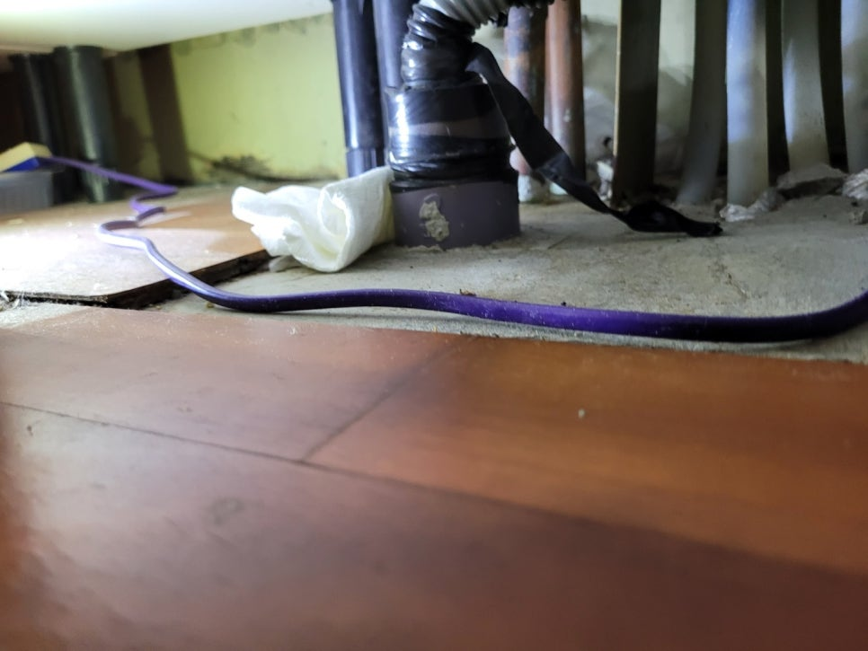
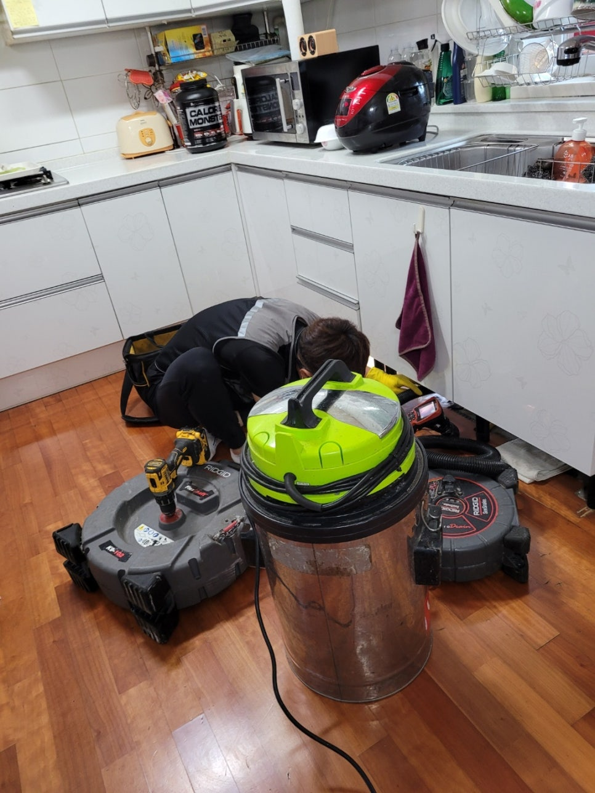
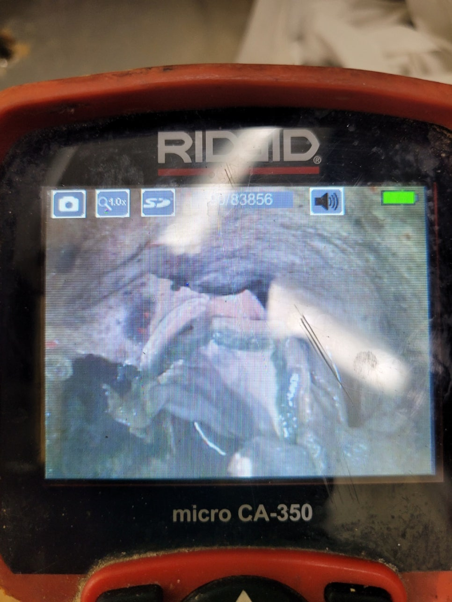
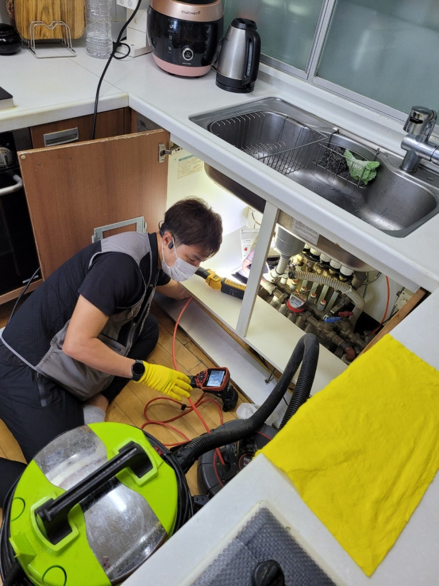

🏠 장안구 싱크대막힘 화서동 정자동 하수구업체 필요하신가요?
수원 싱크대막힘 전문 시공 후기

📋 작업 개요
- 위치: 수원
- 서비스 유형: 싱크대막힘, 하수구막힘, 배관막힘, 고압세척
- 작업 일시: 2023. 5. 18. 10:06
- 업체명: 하수구수사대 (010-5615-2118)
🔍 문제 상황
안녕하세요. 하수구수사대입니다.
오늘은 장안구 싱크대막힘 화서동 정자동 하수구업체 현장에 대해 살펴보도록 하겠습니다. 최근 장안구에 거주하시는 분의 문의를 받고 현장을 방문 드리게 되었습니다.
문의하신 고객님의 경우에는 싱크대가 막혀 도저히 해결할 수 없어 저희 쪽으로 연락 주셨습니다. 장안구 싱크대막힘 화서동 정자동 하수구업체은 싱크대 및 세탁실과 화장실의 배수구가 막힐 경우에는 보통 하수구가 막혔다고 합니다.
싱크대가 막히는 원인은 다양한 편입니다.

🔎 원인 분석
💡 전문가 진단: 싱크대가 막히는 원인은 다양한 편입니다.
고기 등을 조리하고 나서 버리는 기름때 등으로 막히는 경우가 많습니다. 문의하신 고객님의 경우에도 음식물 기름을 닦아내는 것이 아니라 바로 싱크대로 버린다고 말씀하셨습니다. 몇 번 버리는 것은 크게 문제가 되지 않지만 기름때나 음식물이 누적된다면 지금과 같이 막히는 현상이 발생하게 되는 것입니다.
저희 하수구수사대에서는
우선 배관 상태를 살펴보기로 하였습니다. 예전에는 무작정 배관에 이물질을 제거하는 장비를 넣고 작업을 진행하였지만 지금은 프로세스가 달라졌습니다. 우선 내시경 카메라를 이용해 내부 상태를 관찰하였습니다.
역시나 예상한 것처럼 음식물 덩어리와 기름 슬러지가 배관 곳곳에 덕지덕지 붙어 있었습니다. 이러한 이물질 때문에 싱크대 물이 제대로 내려가지 않았던 것입니다. 불행 중 다행으로 배관에 구멍이 있거나 하는 흔적은 없었습니다.
큰 덩어리를 제거하기 위해 석션기를 이용하기로 하였습니다.

🔧 작업 과정
이처럼 한 번 막혔을 경우에는 이물질을 제거하는 데 주력하고 있습니다. 단순히 석션기만 밀어 넣는 것이 아니라 내시경 카메라로 배관 상황을 살피면서 작업을 진행하였습니다. 배관의 경우에는 기름이나 음식물 등으로 인해 막히는 경우가 많은 편입니다.
그리고 막힌 정도에 따라 배관 세척 진행 여부를 결정하게 되는 것입니다. 대부분은 작업 현장에서는 석션기만으로 해결되는 편입니다. 만약 작업이 진전이 없다면 다른 작업을 추진해야 할 것입니다.
다행스럽게도 문의하신 고객님은 석션기로 무사히 해결할 수 있었습니다. 내시경 카메라로 작업 과정을 지켜보면서 기름 슬러지와 덩어리진 오염 물질들을 하나하나씩 제거해 나갔습니다. 작업을 완료하고 나서 싱크대 물이 제대로 내려가는지를 확인하였습니다.
예전처럼 물이 잘 내려가는 싱크대를 보시고 고객님은 만족해하셨습니다. 뿌듯해하시는 고객님을 보면서 오늘도 작업을 제대로 했구나 하는 보람을 느꼈습니다. 이러한 경우 전문 업체에서는 수월하게 해결할 수 있으나 고객님이 직접 해결하기 어려운 경우가 많을 것입니다.
직접 해결하려고 하다가 일이 더 커지는 경우가 있습니다. 이번 싱크대 막힘 현상도 그러한 케이스가 될 뻔하였습니다. 몇 번 시도하고 관련된 문제가 해결되지 않는다면 하수구수사대에 연락 주시길 바랍니다.
다행히도 의뢰를 주신 고객님은 잘 수습이 되었습니다. 일상생활 중 싱크대 막힘 현상은 간혹 생길 수밖에 없을 것입니다. 제일 좋은 것은 막히지 않도록 기름이나 음식물 쓰레기는 별도 처리하는 것입니다.
하지만 만약 막히게 된다면 자체적으로 해결하는 것보다는 되도록 전문 업체에 맡기는 것 여러모로 좋을 것입니다. 지금까지 하수구수사대에서 장안구 싱크대막힘 화서동 정자동 하수구업체 관련 내용 알아보았습니다.
하수구가 막혔다면 당황하시마시고


✅ 작업 완료
언제든지 하수구수사대를 찾아주시길 바랍니다.
경기도 수원시 장안구 서부로 2139 5층 5032호




⚠️ 주방 싱크대 배관 막힘 예방 수칙
- ✅ 기름기가 묻은 식기나 프라이팬은 설거지 전 키친타올로 반드시 기름때를 닦아내세요.
- ✅ 주기적으로 싱크대 개수대에 뜨거운 물을 가득 받아 한 번에 내려 배관 내부 기름을 씻어내세요.
- ✅ 배수구 거름망을 미세한 필터로 사용하시고 음식물 찌꺼기가 틈으로 새어 들지 않게 관리하세요.
- ✅ 베이킹소다와 식초를 뜨거운 물과 함께 일주일에 한 번씩 부어주면 배관 살균과 막힘 예방에 좋습니다.
💡 핵심 정리
- 확실한 장비 작업(내시경 점검 및 샤프트 스케일링)으로 원인을 뿌리 뽑습니다.
- 작업 후 1년 이내에 동일한 부위 재발 시 100% 무상 A/S 서비스를 보장합니다.
- 서울 · 경기 · 인천 전 지역에 24시간 언제든 긴급 출동할 수 있도록 항시 대기 중입니다.
❓ 자주 묻는 질문 (FAQ)
🚨 수원 싱크대막힘 문제로 고민이신가요?
정확한 원인 진단과 확실한 시공으로 재발 없는 해결을 약속드립니다.
24시간 긴급 출동 | 서울 · 경기 · 인천 전지역 | 1년 내 재발 시 무상 A/S